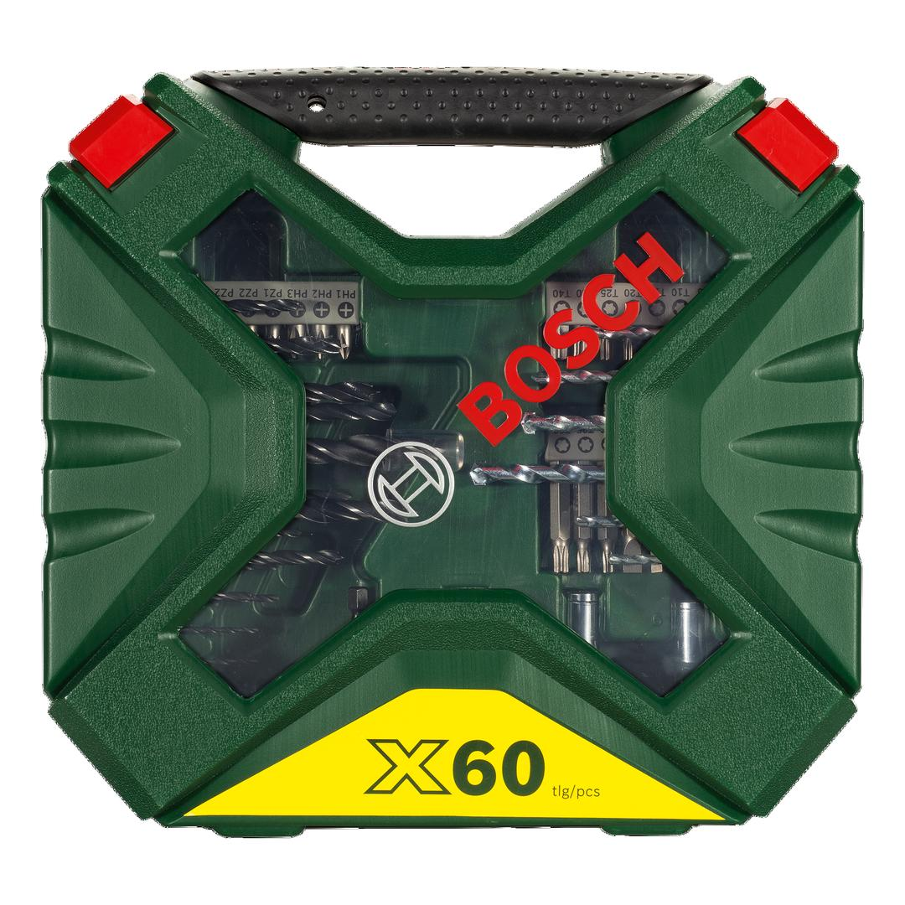
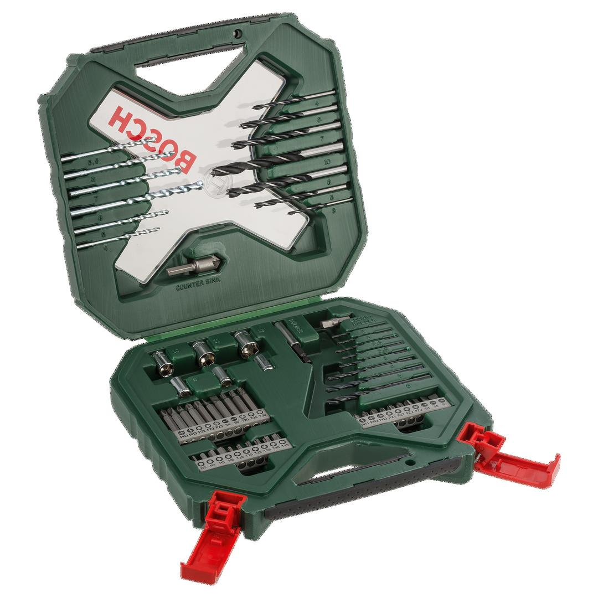

2607010611


| Contents |
8 HSS metal drill bits, Ø 2-6 mm
6 masonry drill bits, Ø 4-8 mm
7 wood drill bits, Ø 3-10 mm
10 screwdriver bits, L = 50 mm
PH 2/3
PZ 1/2/3
S 4/6
T 20/25/30
20 screwdriver bits, L = 25 mm
PH 1/2/3
PZ 1/2/2/3
S 4/6/7
HEX 3/4/5/6
T 10/15/20/25/30/40
6 nutsetters, Ø 7/8/9/10/11/13 mm
1 adapter for nutsetters
1 universal holder, magnetic
1 countersink |
| Packaging |
Plastic case with printed card |
| Dimensions (lxwxh) |
259 x 63 x 243 mm |
| Weight |
1.137 kg |
| Pack quantity |
60 Pcs |
| Minimum order quantity |
1 Pcs |
DIY with Bosch quality: Drilling and screwdriving made easy.